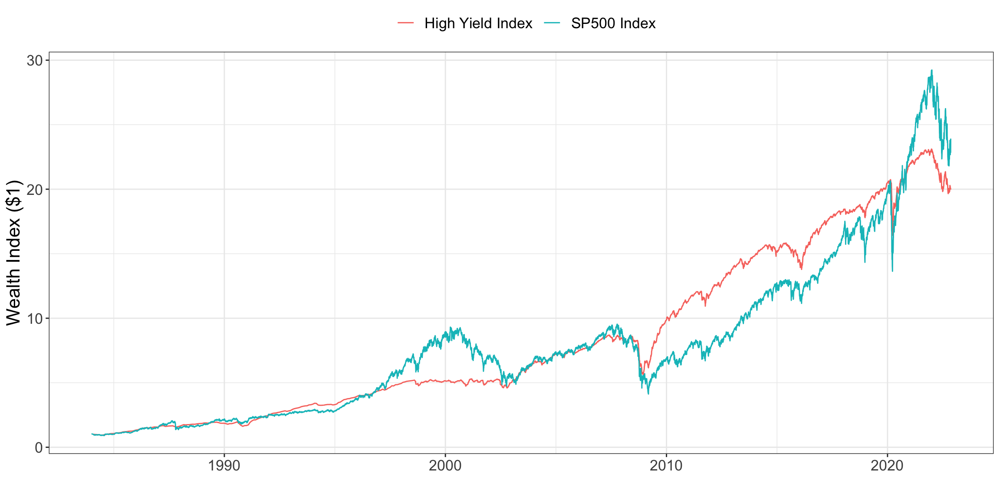

A stock market index composed of 500 large companies traded on U.S. stock exchanges. Each constituent’s weight in the index is proportional to its market capitalization.
High Yield Index
A bond index composed of high yield debt - corporate bonds with an investment grade of BB and below.
High Yield Spread
The yield difference between High Yield Debt and U.S. Treasuries (U.S. Government Debt). For specific information on this series and how it is calculated please visit the FRED.
Federal Funds Rate
The rate at which major U.S. banks lend their ‘federal funds’/reserve balances to each other overnight. This is generally the rate referred to when people mention ‘the interest rate’.
Coupon Rate
The annual rate of income received by an investor for holding a bond. A bond with a 5% coupon rate and face value of $100 will result in annual income receipts of $5.
Yield to Worst
The lowest possible yield that can be earned by a bond that fully adheres to its contracted terms (perhaps a bond has a callable provision etc.). This measure does not include default risk.
high_yield_data %>%filter(date >=ymd("1984-01-01")) %>%filter(symbol %in%c("hyi", "spy")) %>%group_by(symbol) %>%arrange(date) %>%mutate(value = value /first(value)) %>%ungroup() %>%ggplot(aes(date, value, color = name)) +geom_line() +theme_bw() +labs(color ="",y ="Wealth Index ($1)",x ="" ) +theme(legend.position ="top", text =element_text(size =16))

We can see that, since 1984, the performance of Equities relative to High Yield Debt has been roughly comparable, with Equities slightly outperforming. Equities returned approximately 24x and High Yield Debt returned 20x. However, let’s see if we can identify the time periods where High Yield Debt outperformed Equities, and why.
Shaded regions indicate years where High Yield Debt ourperformed Equities
From the above, we can see there seems to be cyclicality in the performance of High Yield Debt relative to Equities, with alternating 2-4 year periods of outperformance followed by 1-3 year periods of underperformance.
Key Takeaways
In order to better understand the logical cause-and-effect relationships at play between our variables, let’s re-visualize our yearly performance comparison, but this time we will add our other relevant variables into the mix and attempt to find helpful trends:
Regions shaded in purple indicate positive outperformance
Here are some primary takeaways from the visuals:
Outperformance generally occurs when:
‘Interest Rates’ are falling
Yield Spreads and the YTW are elevated
Especially in relation to the 2-5 years prior
Preceeding periods are associated with economic bubbles
1990 Oil Shock / Recession
2001 Dot Com Bubble
2008 Great Financial Crisis
2022 Covid/Tech Bubble
Positive outperformance occurs later in the period
Building a Simple Narrative
Obviously, these broad points are interrelated; let’s try to build an extremely simple narrative that captures these relationships:
This narrative is by no means detailed, nor complete. In, fact it can be superbly incorrect, but that is for the reader to judge.
During prolonged periods of strong stock market upswings, especially those wherein current growth exceeds productive growth, market participants bet on good times continuing - typically levering up in the process. This makes complete sense; why finance growth with equity if it is performing so well? Better to issue debt instead… Investors and banks are happy to accept the debt; these companies are performing well (too well). But, just like it’s not a good idea to push yourself past physical capacity for extended periods of time, it is not good for a company to grow faster than its economic potential for extended periods of time; eventually something breaks.
During this initial period of hurt, both equity holders and debt holders get whacked, valuations drop and the first bankruptcies occur. However, since debt holders get paid first, they get hurt slightly less than equity holders. Now, we are at a critical point in time… investors start to panic and make some back of the napkin calculations… and conclude that at current rates, debt is no longer a profitable investment, so they demand higher yields. Notice that YTW and High Yield Spreads briefly shoot up during these periods (1990, 2001, 2008…). However, the market seems to systematically underestimate two important things: 1) the Federal Reserve’s willingness to supply the proverbial medicine by lowering interest rates and 2) the associated aid from lower interest rates.
We can notice from our graph that, after the tough first year where both asset classes perform badly, the Fed steps in and stimulates the economy by lowering the cost of borrowing (… we also notice that yields will quickly follow suit). Naturally, companies are now able to negotiate better deals on borrowing money, so they take on more debt at a lower rate and use it to service their older, more expensive debt. Obviously, these companies are kicking the can down the road, and we can see that problems will occur when the Fed can no longer lower interest rates, but for now, this narrative sort of makes sense. Notice the prolonged periods of High Yield’s outperformance occur approximately a year after the initial crash (1990, 2001, 2008) for 2-4 years because investors were able to invest when yields were at their peak, and the Fed stimulated the economy shortly thereafter.
Now, we flip back to the origin of the story… High Yield Debt is starting to see a prolonged period of strong performance… things seem less risky and therefore yields decline and the pendulum starts to swing in favor of equities again…
A Note from OpenAI
When tasked with the following - “Identify time periods where High Yield Debt outperformed Equities. Give a hypothesis for why it outperforms during periods of high inflation and economic downturns.” - OpenAI’s model gave the following answer:
“High Yield Debt has historically outperformed Equities during periods of economic downturns, such as the 2008 Financial Crisis and the 2020 Coronavirus pandemic. Additionally, High Yield Debt has outperformed Equities during periods of rising inflation, such as the 1970s and 1980s.
The reason why High Yield Debt outperforms Equities during periods of high inflation and economic downturns is because it offers a higher yield than Equities, which can help to offset the effects of inflation and provide a more stable return in a volatile market. Additionally, High Yield Debt is generally less volatile than Equities, making it a more attractive investment during periods of economic uncertainty. Finally, High Yield Debt is typically less sensitive to changes in interest rates, which can be beneficial during periods of rising inflation.”
- OpenAI
Going Back Even Further
While we don’t have data on a High Yield Bond Index, its Yield Spread, YTW, and Coupon Rate, before 1984, Aswath Damadoran, a professor at NYU known for gathering and sharing financial data, published the following helpful dataset:
Code
read_excel(here("raw_data", "High Yield Analysis", "damadoran_return_data.xlsx")) %>%select(-Inflation) %>%head() %>%gt() %>% gt::tab_header(title ="Yearly Real Returns") %>% gt::fmt_percent(-year) %>% gt::tab_footnote(footnote ="All returns are stated in real terms (i.e. adjusted for inflation)")
Yearly Real Returns
year
SP500
3 Month Treasury Bill
10 Year Treasury Bond
Baa Corporate Bonds
Real Estate
1928
45.49%
4.29%
2.01%
4.43%
2.68%
1929
−8.83%
2.56%
3.60%
2.42%
−2.63%
1930
−20.01%
11.69%
11.68%
7.41%
2.24%
1931
−38.07%
12.82%
7.45%
−7.02%
1.29%
1932
1.82%
12.64%
21.25%
37.74%
−0.21%
1933
48.85%
0.20%
1.08%
12.11%
−4.54%
All returns are stated in real terms (i.e. adjusted for inflation)
Let’s treat Baa Corporate Bonds as a proxy for ‘High Yield’ Debt and visualize its performance relative to the SP500 since 1928.
The above chart, while limited in its usefulness, provides us with some possible amendments to our key takeaways:
Our observation that positive outperformance occurs later in the outperformance period does not seem to hold well during the 1929-1934 & 1940-1943 time-frames.
There appears to be marginally less cyclicality in outperformance.
Most importantly, the above solidifies our claim that High Yield Outperforms during periods associated with financial bubbles (1929, 1940, etc.).
Applying the Key Takeaways and Narrative
Let’s attempt to codify our narrative and key takeaways, so that we can isolate periods of strong High Yield Debt returns (and hopefully identify future ones as well). I will tell the computer to go through the data and highlight a region if:
the current YTW is 30% greater than its 3 Year Moving Average w/ a 2-year lag
the current Yield Spread is 75% greater than its 3 Year Moving Average w/ a 2-year lag
the current Federal Funds Rate is 33% lower than its 3 Year Moving Average w/ a 2-year lag
Plot 2 is the same as Plot 1, but Fed Funds Rate is removed. Plot 3 is being re-provided for ease of comparison.
As we can see, these 3 simple metrics, especially the YTW metric, provide a decent signal for periods of strong High Yield Debt returns. And while these metrics have been created with a knowledge of the past, they certainly corroborate the simple narrative we created above. Possible next steps include applying these signals to other developed markets while being mindful of their current position in their interest rate cycle, improving these signals, and assessing hypothetical performance, etc… I leave these as exercises to the reader…
The Future: Where are we heading?
In our above research, one of our key takeaways involved the Federal Funds Rate (i.e. the ‘interest’ rate). This should be self-evident as the interest rate measures the cost of borrowing money and is therefore the primary drivers of the economy and financial markets. We noted that during periods of economic hurt (typically after some sort of ‘bubble’) the Fed would lower rates and kick the can down the road. However, we have now reached that special point in time wherein interest rates can no longer be lowered. Instead, the Fed has been forced to aggressively raise rates, subsequently popping the Tech bubble. This makes for an interesting investment environment going forward. We have noted that High Yield Debt performs better during these reactionary, declining interest rate environments, and equities during the post-recovery ‘rising’ rate environment. However, in spite of all this, my outlook for equities is still slightly more pessimistic. Instead, I think that High Yield Debt is likely to outperform over the next 2 years, followed by Equities picking back up…
Final Remarks
The above is intended as an exploration of historical data, and all statements and opinions are expressly my own; neither should be construed as investment advice.